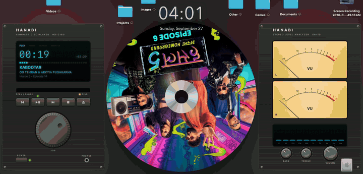
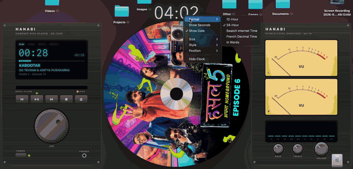
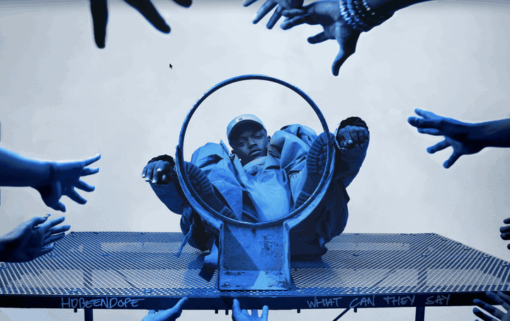
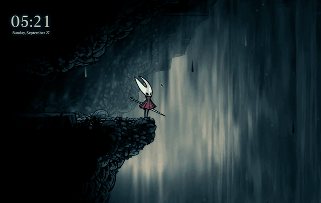
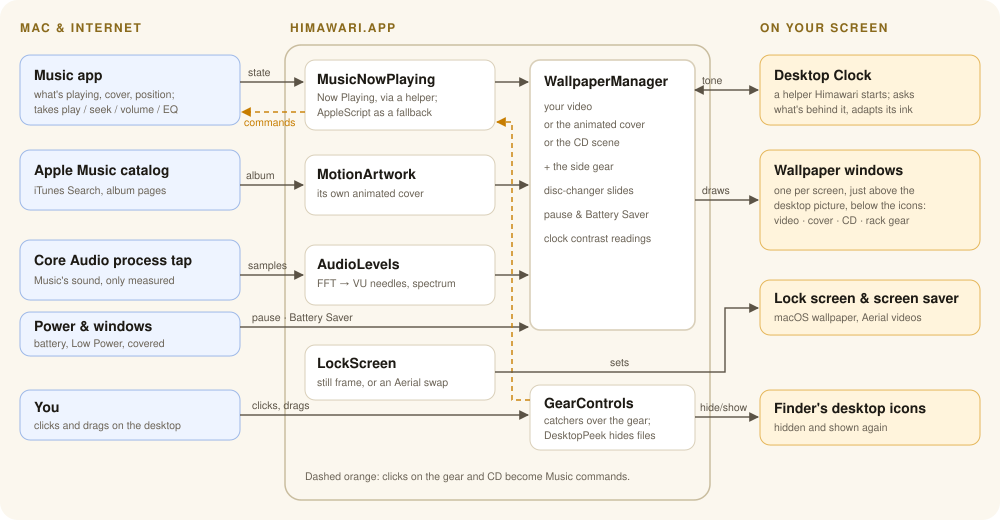
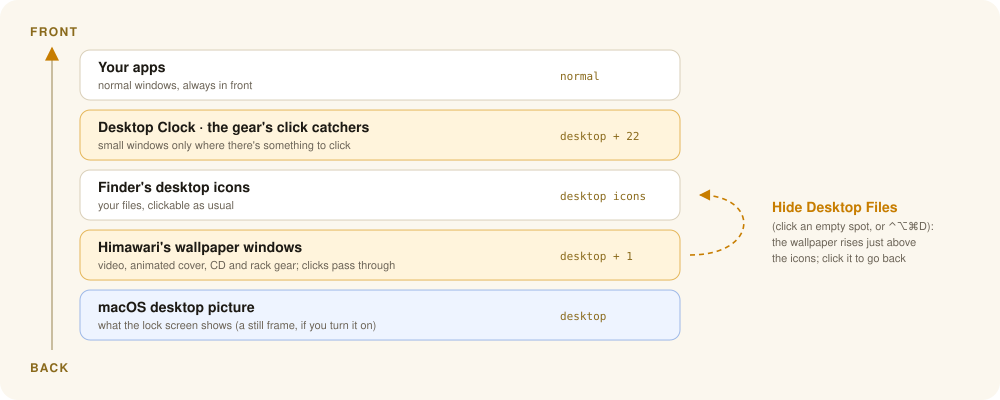

A live video wallpaper for macOS that turns into your music: Apple Music's animated album art, retro hi-fi gear that follows the song, and a spinning CD for everything else.
BETA 1.1.3An illustration of the music wallpaper. On your desktop, the gear shows the real song, and you can play it.
Recorded on a MacBook. (The first two were recorded before the rename, so the gear still says Hanabi.)




Himawari sits quietly in the menu bar. Pick a video and it becomes your wallpaper. Press play in Music and the desktop follows the song.
Any .mp4 or .mov as your wallpaper, filling the screen. It pauses when covered, locked, asleep or on battery, so it's easy on the battery.
While a song plays, the album's animated cover becomes the wallpaper, shown whole and never cropped, at up to 2160×2160.
Beside the artwork, a CD deck with a fluorescent display and a stereo analyzer whose VU needles and spectrum move with the actual music.
Songs without an animation get their cover printed on a spinning picture disc, with a disc-changer slide between songs.
Play, skip and seek from the gear, scrub with the jog wheel or by turning the CD, and set Volume, Bass, Treble, Repeat and Shuffle.
Click an empty spot on the desktop to see just the wallpaper, and click again to bring your files back. Or press ⌃⌥⌘D.
Optional: your video on the lock screen and as the screen saver, converted to Apple's own Aerial format. Apple's originals are kept.
A big see-through clock that ticks with the system clock and adapts its ink to the wallpaper behind it. Click it for 24-hour, Swatch .beats, French decimal time or words.
Turn on Use Apple Music Artwork While Playing in the menu. From then on, every song picks its own look.
The loop fills the middle of the screen, kept below the notch. The bars at the sides become the CD deck and the stereo analyzer.
The exact cover Music shows is printed on a CD, placed so the center hole lands on a calm spot. Grab the disc and turn it like a record to scrub, with a soft whirr.
Skipping slides the old disc off to the left and brings the new one in from the right, spinning up as it settles. Going back runs it the other way.
After a short grace period your own wallpaper comes back, so a quick skip doesn't make it flash.
Himawari is one menu-bar app plus a tiny clock helper. Everything happens on your Mac; the only things it fetches are album covers from Apple.


| Permission | Why |
|---|---|
| Automation ▸ Music | To read what's playing and the album cover, and to control Music from the gear. |
| Automation ▸ Finder | To check whether a desktop click landed on a file (for click to hide files). |
| System Audio Recording Only | To measure the music's loudness for the VU meters. Nothing is recorded; decline and the meters animate on their own. |
No accounts, no analytics, no telemetry. Himawari uploads nothing about you. It only fetches album artwork from Apple:
| Connects to | When | For |
|---|---|---|
itunes.apple.com | A song starts | Finding the album, to look for its animated cover |
music.apple.com | A song starts | The animated cover's video address, from the public album page |
*.mzstatic.com | A song starts | The cover at full resolution, and the animated cover itself |
youtube.com | Only if you turn on the YouTube loop | Playing the song's music video in YouTube's embedded player |
It idles at well under 1% CPU. On battery or in Low Power Mode, Battery Saver streams artwork at 1080p, rests the gear's motion and skips the blurred fill. You can also pause the wallpaper on battery or whenever the desktop is covered.
Not yet. The music wallpaper follows Apple's Music app; your own video wallpaper works whatever you listen to.
Anything macOS plays: .mp4 and .mov (H.264 or HEVC). .webm doesn't play; convert it with ffmpeg -i in.webm -c:v h264_videotoolbox -b:v 8M -an out.mp4.
Two parts use undocumented Apple behavior: reading the system's Now Playing state and finding animated covers on Apple Music's public pages. If either stops working after a macOS update, Himawari falls back (to AppleScript, and to the CD).
Yes: the code is on GitHub at dhairyab0069/himawari-mac, with build instructions. Issues and suggestions are welcome.
Hanabi for GNOME by Jeff Shee, the live video wallpaper extension for GNOME, was the starting point and gave this project its first name. Himawari is a separate macOS app written from scratch in Swift; none of Hanabi's code is used.
Himawari was built with Claude Code, Anthropic's AI coding assistant, as a pair programmer. I decided what to build, how it should look and behave, and tested every change on my own Mac. It's a tested personal project, not an audited product.
AVFoundation, Core Animation, Core Audio process taps and SwiftUI do the heavy lifting, and Apple Music provides the animated covers. The Now Playing helper follows the approach of mediaremote-adapter.